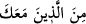

Peygamber (s.a.) ve ashabı bir yıl çok büyük meşakkatlere göğüs gererek geceleyin
kalktılar ve ibâdet ettiler. Bu meşakkatlere, gece namazının farz olan mikdarının ne
kadar olduğunu bilmediklerinden katlanıyorlardı. Hattâ sahâbenin ekserisi farz olan
mikdarı kılma noktasında hataya düşerim korkusuyla bütün geceyi ibâdetle geçiriyordu.
Böylece sahâbelerin ayakları şişti ve renkleri sarardı, soldu.
Bunun üzerine Allah sûrenin son kısmındaki “inne rabbeke...” diye başlayan 20’inci
âyeti on iki ay tuttu, indirmedi. Nihâyet sûrenin sonundaki hafifletici hükümleri ihtiva
eden 20’inci âyeti indirdi. Böylece teheccüd namazının aslı farz olarak kalmakla
birlikte zikredilen mikdar nesh edilmiş/yürürlükten kaldırılmış oldu. Artık
Müslümanlar, teheccüdü farz olmakla birlikte kolayına geldiği mikdarda kılma imkânına
kavuşmuş oldu. Ardından bu farzlık da -beş vakit namazın farz olmasıyla birlikte-
ortadan kaldırılmış oldu ve böylece -rivâyete göre- beş vakit namazdan fazla kılınan
namaz, ziyâde namazlar olmuş oldu. “Nısfehû ve sülüsehû” ifâdeleri yukarda geçen
“ednâ” kelimesi üzerine mâtuftur. Buna göre burada denmiş oluyor ki şüphesiz rabbin
senin ve seninle birlikte olan sahâbe topluluğunun gecenin üçte ikisinden azında,
yarısında ve üçte birinde kalktığınızı biliyor.
“__WORD__ ifâdesindeki “min” beyân edicidir. Öte yandan bu kelime gece namazının
herkese farz olmadığını göstermektedir. Kısacası âyetin mânâsı; rabbin senin ve gece
namazı hususunda sana uyan bir topluluğun gecenin üçte ikisinden biraz azı, yarısı ve
üçte biri mikdarında kalktığınızı biliyor. Yukarda işâret edildiği üzere Peygamber (s.a.)
Efendimiz’e uyan bu topluluk onun sahâbîleridir. Bu âyet-i kerîme aynı zamanda
Peygamber (s.a.) Efendimiz’in sahâbilerine Allah’ın ihsanda bulunacağına bir vaad
anlamına gelmektedir. Bu tıpkı herhangi bir kimsenin bir başkasına vaad etmek
istediğinde “ben senin bana yaptıklarını biliyorum” ifâdesinde söylediği gibidir.
Kûtu’l-kulûb isimli eserde şöyle deniyor: Allah gece ibâdete kalkma hususunda
Peygamberi Hz. Muhammed Mustafa (a.s.)’la birlikte ashabını da anmış, yaptıkları işe
mükâfât noktasında onları peygamberle birlikte zikretmiştir.
et-Tevilâtü’n-necmiyye’de bu konuda şöyle deniyor: Bu âyet-i kerîmede Allah kalb
rasûlünün vaktin birçoğunda Allah’a yönelmesi ve kişinin nefsinden yüz çevirmesi
dolayısıyla, tabîatın gecesinden sıyrılıp çıktığına işâret etmektedir. Ancak bu sıyrılıp
çıkma çok az vakitlerde gerçekleşmemektedir. Bu da hicabı gerektiren bir hikmete
mebnîdir. Çünkü hicab -denildiği üzere- bir rahmettir. Hicab olmasaydı kul ilâhı
bilmezdi ve ayrıca kalb rasûlü ile birlikte bulunan rûhânî kuvvet organları ve carihaları
tanımazdı.
“Geceyi ve gündüzü” yalnız bir olan “Allah takdir eder” Geceyle gündüzün
takdirine, her ikisinin zamanlarının mikdarının ve vakitlerinin süresinin bilinmesine hiç
kimsenin gücü asla yetmez. Âyette “Allah” isminin önce gelip ifâdenin bununla
başlaması ayrıca “yukaddiru” kelimesinin bunun üzerine bina edilmesi takdir noktasında
tek belirleyicinin Allah olduğuna işâret etmektedir.
“Ölçmek, hesaplamak; yâni Allah Teâlâ gece ve gündüzü ölçer, hesap eder ve onların